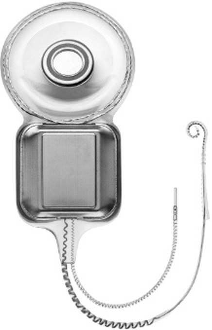
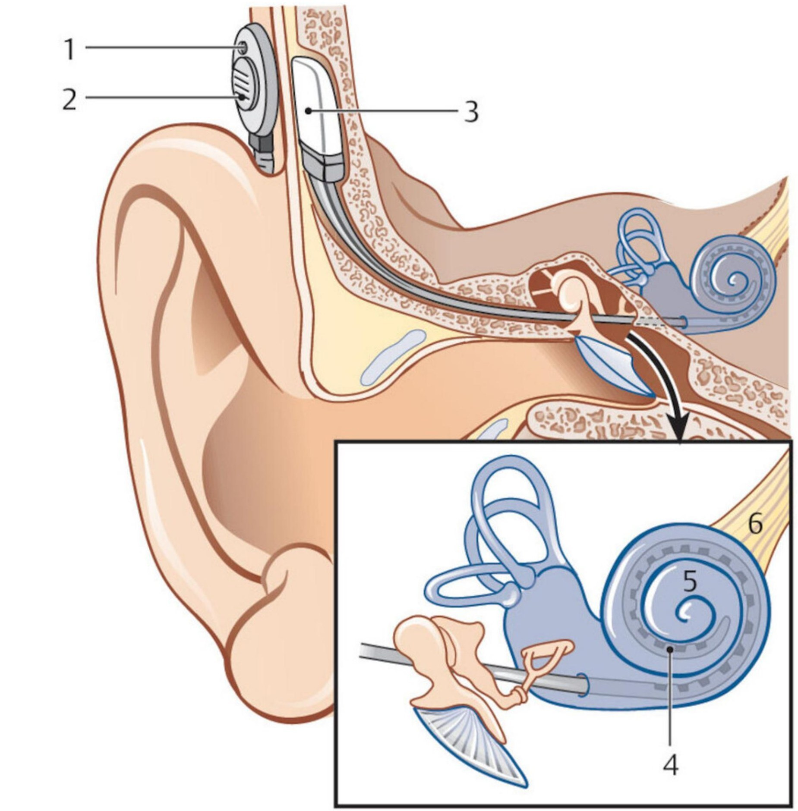

Сверка с PDF рубрикатора выполняется…
Нейросенсорная тугоухость у детей
Клинические рекомендации от 10.02.2025 · дети
Основные положения
- Основные признаки: отсутствие или сомнительная реакция ребёнка на звуки, задержка речевого развития, а при снижении слуха после овладения речью — распад речи. Степени тугоухости по среднему порогу воздушной проводимости на 500, 1000, 2000 и 4000 Гц:
- I степень: 26–40 дБ;
- II степень: 41–55 дБ;
- III степень: 56–70 дБ;
- IV степень: 71–90 дБ;
- глухота: 91 дБ и более.
- Аудиологический скрининг всем новорождённым:
- 1-й этап, регистрация ОАЭ: до 1 месяца;
- 2-й этап, подтверждающая диагностика в сурдологическом центре: до 3 месяцев;
- начало реабилитации при подтверждённой тугоухости: до 6 месяцев.
Дети с факторами риска проходят полное аудиологическое обследование независимо от результата скрининга.
- При острой тугоухости назначают глюкокортикоиды системно или интратимпанально и госпитализируют пациента. Хроническую (стойкую) тугоухость консервативно не лечат.
- Слухопротезирование показано при двусторонней хронической тугоухости со средним порогом на лучше слышащем ухе 31 дБ и более.
- Кохлеарная имплантация показана при хронической двусторонней тугоухости IV степени или глухоте (пороги 80 дБ и более на 500–4000 Гц) без эффекта от слуховых аппаратов за 3–6 месяцев; приоритет у детей до 3 лет.
- Без этапа слуховых аппаратов на КИ направляют детей с двусторонней тугоухостью IV степени или глухотой:
- при подтверждённой наследственной тугоухости (мутации гена GJB2 и других генов);
- после перенесённого менингита (менингоэнцефалита).
Клиническая картина и классификация
Определение
Сенсоневральная тугоухость (СНТ): снижение слуха вплоть до утраты при поражении звуковоспринимающего отдела слухового анализатора, от сенсорного аппарата улитки до невральных структур.
Классификация
- I степень: 26–40 дБ;
- II степень: 41–55 дБ;
- III степень: 56–70 дБ;
- IV степень: 71–90 дБ;
- глухота: 91 дБ и более.
- врождённая: тугоухость с рождения или выявленный патологический генотип независимо от срока выявления тугоухости;
- приобретённая: после установленной причины с ухудшением реакции на звуки и возможным регрессом речи, или по неизвестной причине при доказанном ранее нормальном слухе.
- внезапная (идиопатическая): развивается до 12 часов;
- острая: развивается за 1–3 суток, сохраняется до 1 месяца;
- подострая: 1–3 месяца от начала;
- хроническая (стойкая): более 3 месяцев или нет данных о начале.
- стабильная;
- прогрессирующая;
- флюктуирующая;
- с улучшением.
- доречевая (долингвальная): до овладения речью;
- послеречевая (постлингвальная): после овладения речью.
Этиология
- изменения генотипа у 70% детей с врождённой и доречевой тугоухостью, в 70–85% несиндромальные формы;
- чаще всего выявляют мутации гена GJB2 (коннексин 26), в России прежде всего 35delG — более чем у 50% детей со стойкой двусторонней тугоухостью; рецессивные мутации приводят к врождённой двусторонней тугоухости тяжёлой степени и глухоте;
- синдромальные формы: синдромы Пендреда, Ашера IIA, бранхио-ото-ренальный, Ваарденбурга и другие.
- самой частой причиной считается врождённая цитомегаловирусная инфекция (ЦМВИ); при бессимптомной форме тугоухость развивается в 25% случаев, в половине из них прогрессирует;
- реже причиной бывают краснуха, токсоплазмоз, сифилис.
- менингит;
- вирусные детские инфекции;
- ототоксические препараты: аминогликозиды, диуретики и другие;
- травмы головы: перелом височных костей, основания черепа;
- нейродегенеративные заболевания.
- ближайшие родственники с нарушением слуха с детства;
- синдромы или генетические заболевания, связанные с нарушением слуха;
- аномалии ушной раковины, слухового прохода, другие челюстно-лицевые аномалии (кроме ушных привесков и изолированной расщелины верхней губы);
- внутриутробные инфекции: ЦМВИ, краснуха, токсоплазмоз, сифилис;
- пребывание в отделении реанимации и интенсивной терапии новорождённых более 48 часов;
- недоношенность 32 недели и менее или масса тела при рождении менее 1500 г;
- гипербилирубинемия, потребовавшая заменного переливания крови;
- перинатальная асфиксия, гипоксия;
- тяжёлое гипоксически-ишемическое или геморрагическое поражение ЦНС, ДЦП, органическое поражение ЦНС, нейродегенеративные заболевания;
- лечение ототоксическими препаратами;
- экстракорпоральная мембранная оксигенация.
Клиническая картина
- нет или сомнительная реакция на окружающие звуки;
- задержка этапов речевого развития: гуления, лепета, первых слов, простых фраз;
- после овладения речью: распад речи — нет новых слов, ухудшается звукопроизношение вплоть до исчезновения устной речи;
- старшие дети сами отмечают снижение слуха, плохую разборчивость речи, шум в ушах.
- слух ближайших родственников;
- течение беременности, гестационный возраст, течение родов, массу тела при рождении, оценку по шкале Апгар;
- течение перинатального периода;
- инфекционные и соматические заболевания, наблюдение у других специалистов.
Отоскопия: слуховой проход свободный, барабанная перепонка перламутрово-серая, матовая, опознавательные знаки чёткие. Осматривают и другие ЛОР-органы, чтобы исключить нарушение воздушного звукопроведения.
В учебнике: тугоухость и заболевания внутреннего уха. Анатомия и физиология: наружное и среднее ухо, внутреннее ухо.
Диагностика
Перед исследованием слуха выполняют отоскопию. У детей раннего возраста диагноз основан на объективных методах (ОАЭ, КСВП, ASSR, акустическая импедансометрия) и оценке поведенческих реакций на звуки и речь; у старших дошкольников и школьников добавляют тональную пороговую, надпороговую и речевую аудиометрию.
- подозрение на тугоухость: по данным скрининга новорождённых, при отсутствии или изменении реакций на звуки, задержке или нарушении речевого развития, жалобах на снижение слуха, наличии факторов риска;
- нормальная отоскопическая картина;
- повышение порогов и (или) изменение морфологии пиков КСВП (при слуховой нейропатии регистрируется микрофонный потенциал улитки), повышение порогов ASSR, отсутствие ОАЭ (при слуховой нейропатии ОАЭ может регистрироваться), повышение порогов при тональной аудиометрии по типу нарушения звуковосприятия.
Аудиологический скрининг новорождённых
Всем новорождённым регистрируют отоакустическую эмиссию (ОАЭ) перед выпиской из роддома и (или) в поликлинике до 1 месяца.
Детям, не прошедшим скрининг в роддоме, и родившимся вне родовспомогательного учреждения ОАЭ регистрируют в поликлинике до 3 месяцев. При более позднем обращении с сомнительной реакцией на звуки незамедлительно направляют на полное обследование в специализированный центр.
- ОАЭ на 3–4-е сутки в роддоме, при переводе в отделение патологии новорождённых — при выписке;
- нет чёткого ответа на одно или оба уха: повтор в поликлинике в 1 месяц;
- ОАЭ не зарегистрирована: 2-й этап в сурдологическом центре до 3 месяцев.
- ближайшие родственники с нарушением слуха с детства;
- синдромы, связанные с нарушением слуха;
- челюстно-лицевые аномалии (кроме ушных привесков и изолированной расщелины верхней губы);
- внутриутробные инфекции: ЦМВИ, краснуха, токсоплазмоз, сифилис;
- реанимация новорождённых более 48 часов;
- недоношенность 32 недели и менее или масса тела менее 1500 г;
- тяжёлая гипербилирубинемия с заменным переливанием крови;
- тяжёлое гипоксически-ишемическое или геморрагическое поражение ЦНС;
- ототоксические препараты.
У новорождённых высокого риска возможна отсроченная или прогрессирующая тугоухость. При задержке слуховых реакций или речи на любом этапе ребёнка направляют на исследование слуха по возрасту.
Коротколатентные слуховые вызванные потенциалы и ASSR
- ОАЭ не зарегистрирована на 1-м этапе скрининга;
- дети до 3 лет с факторами риска;
- дети до 3 лет с задержкой развития, когда поведенческие реакции на звуки трудно оценить.
Проводят в сурдологическом центре во время естественного сна; под медикаментозной седацией — только в учреждении с реанимационной службой.
- пороги КСВП в каждом ухе на щелчки и (или) широкополосные Chirp-стимулы, шаг не более 10 дБ; анализ морфологии, межпиковых интервалов и латентностей;
- для выявления слуховой нейропатии: стимулы противоположной полярности, внутриушные телефоны, тест с пережатым звуководом для верификации микрофонного потенциала;
- для степени тугоухости и слухопротезирования нужна частотно-специфичная информация: ASSR, тональные посылки 1000 или 500 Гц;
- ASSR не используют изолированно (ей предшествует КСВП на щелчок) и при подтверждённой слуховой нейропатии.
Отоакустическая эмиссия
При подозрении на нарушение слуха регистрируют задержанную вызванную ОАЭ и (или) ОАЭ на частоте продукта искажения для оценки функции улитки.
Проводят и при нормальных порогах КСВП на щелчки — для частотно-специфичной информации.
Акустическая импедансометрия
Всем детям, обследуемым у сурдолога-оториноларинголога, выполняют тимпанометрию и акустическую рефлексометрию.
Детям до 6 месяцев тимпанометрию проводят с высокочастотным зондирующим тоном (обычно 1000 Гц), недоношенным — до 8–12 месяцев.
Аудиометрия по возрасту
Детям от 6 месяцев до 2 лет проводят тональную пороговую аудиометрию со зрительным подкреплением.
Ребёнок с родителем в звукозаглушённой камере; на звук (трель 1000 Гц) ребёнок поворачивается — включается игрушка или картинка. Частоты 250–4000 Гц. В свободном звуковом поле результат относят к лучше слышащему уху.
Детям от 2 до 5 лет проводят игровую аудиометрию: определяют пороги на 125–8000 Гц для каждого уха по воздушной и костной проводимости.
Детям старше 5 лет проводят тональную пороговую аудиометрию по стандартной методике на 125–8000 Гц по воздушной и костной проводимости.
При возможности исследуют расширенный диапазон до 16–20 кГц, в том числе для контроля ототоксичности.
Детям старше 6–7 лет проводят речевую аудиометрию в тишине и на фоне шума.
Тоно-речевая диссоциация может указывать на слуховую нейропатию или центральные слуховые расстройства.
Открытый выбор: ребёнок повторяет слово; закрытый: показывает картинку. Подача в телефонах или в свободном звуковом поле; при подаче в оба уха или через колонки результат относится к лучше слышащему уху. Для оценки слухопротезирования и КИ — в свободном звуковом поле.
Детям старше 6–7 лет проводят надпороговую аудиометрию: определяют пороги дискомфорта и выполняют тесты на центральные слуховые расстройства.
Исследование позволяет определить уровень поражения; центральные расстройства меняют тактику реабилитации.
Молекулярно-генетическое исследование гена GJB2
Всем детям с несиндромальной двусторонней СНТ любой степени исследуют кровь на мутацию 35delG гена GJB2.
При двух рецессивных мутациях GJB2 и без воспаления в среднем ухе восстановления слуха не ждут, пороги обычно стабильны; раннее начало реабилитации даёт хороший результат.
Консультация врача-генетика по результатам молекулярно-генетического исследования.
ПЦР на цитомегаловирус
Новорождённым с подозрением на ЦМВИ определяют ДНК цитомегаловируса в мазке со слизистой оболочки ротоглотки методом ПЦР в первые 3 недели жизни.
Субклиническая врождённая ЦМВИ является причиной 20% нарушений слуха у новорождённых; тугоухость может развиться отсроченно.
КТ височных костей и МРТ
- тугоухость неясной этиологии и (или) односторонняя: КТ височных костей с шагом не более 0,6 мм.
- по показаниям: МРТ головного мозга (мостомозжечковый угол) и внутреннего уха.
- КТ: аномалии внутреннего уха, изменения внутреннего слухового прохода, оссификация лабиринта;
- МРТ: гипо- и аплазия, объёмные образования слухового нерва, фиброзная облитерация, ликворные свищи лабиринта, поражения центральных отделов.
Оценка развития и консультации
Всем детям с нарушением слуха проводят оценку слухоречевого, когнитивного и коммуникативного развития. Слухоречевое развитие оценивает сурдопедагог по опросникам, общее развитие — специалист, предпочтительно психолог.
- слухоречевое развитие: LittlEARS, шкалы уровней слухового восприятия и разборчивости речи, PEACH, Макартуровский опросник, батарея EARS;
- общее развитие: шкала KID (до 16 месяцев), RCDI-2000 (от 1 года 2 месяцев до 3 лет 6 месяцев), M-CHAT (16–30 месяцев), тест Векслера (старше 4 лет), матрицы Равена (старше 5 лет).
Показана консультация педиатра, при необходимости — других специалистов
- невролог;
- офтальмолог;
- генетик;
- кардиолог;
- нефролог;
- медицинский психолог;
- психиатр.
У 24–40% детей с нарушением слуха есть дополнительные расстройства, влияющие на реабилитацию.
Лечение
Консервативное лечение
При острой СНТ любой этиологии показаны глюкокортикоиды системно или интратимпанально. Схема, приведённая в КР в качестве примера:
- метилпреднизолонoff-label: 1 мг/кг в сутки внутрь 1 раз в день;
- длительность: 14 дней, с постепенным снижением дозы каждые 4 дня.
Консервативное лечение хронической (стойкой) СНТ у детей не проводится.
При острой, подострой и хронической СНТ лечение сопутствующей неврологической и иной патологии проводят профильные специалисты.
Индивидуальная программа реабилитации
Индивидуальная программа реабилитации формируется при подтверждённой тугоухости до 6 месяцев (у недоношенных — скорректированного возраста) и начинается незамедлительно после выявления нарушения слуха.
Включает- слухопротезирование;
- помощь сурдопедагога, логопеда и психолога;
- информационную и психологическую поддержку семьи;
- социальную поддержку;
- диспансерное наблюдение.
При оформлении инвалидности готовят заключение для МСЭ с реабилитационными мероприятиями и техническими средствами реабилитации (ТСР).
Реабилитационный статус, реабилитационный диагноз и потенциал оценивает мультидисциплинарная реабилитационная команда; она же разрабатывает комплекс мероприятий по индивидуальной программе медицинской реабилитации (ИПМР).
Состав команды- врач по медицинской реабилитации;
- врач-сурдолог-оториноларинголог;
- сурдопедагог;
- медицинский логопед (логопед);
- медицинский психолог (психолог).
Слухопротезирование
- двусторонняя хроническая тугоухость: средний порог воздушной проводимости на 500–4000 Гц на лучше слышащем ухе 31 дБ и более;
- двусторонняя тугоухость I степени и корригируемая односторонняя: решение после речевого тестирования и (или) психолого-педагогической оценки;
- некорригируемая односторонняя тугоухость (глухота): системы выносного микрофона.
- острое снижение слуха: нужна диагностика и лечение;
- для аппаратов воздушного звукопроведения: обострение гнойного воспаления наружного или среднего уха;
- в ряде случаев тяжёлое головокружение.
Показания к слухопротезированию определяют по данным КСВП и ASSR и по поведенческим порогам методикой, соответствующей возрасту.
Валидацию, то есть оценку эффективности слухопротезирования и программы реабилитации, проводят не реже 1 раза в 6 месяцев: используют один-два аудиологических метода, анкету и сурдопедагогическое тестирование.
При неудовлетворительном результате ищут и устраняют причину и повторяют валидацию через 1–3 месяца.
- тональные пороги с аппаратом или имплантом в свободном поле для каждого уха;
- речевая аудиометрия с аппаратом в свободном поле детям старше 5 лет при достаточном развитии речи, в тишине и в шуме;
- анкетирование родителей и педагогов, батарея EARS;
- критерии эффективности: положительная динамика слухового и речевого развития, рост разборчивости слов в тишине.
Адаптация к аппарату, как правило, занимает 1–3 месяца: за это время необходимо не менее 1–4 повторных консультаций сурдолога и сурдопедагога. В первые 2 года пользования настройки контролируют не реже раза в 3 месяца. Частота дальнейшего наблюдения приведена в разделе «Диспансерное наблюдение».
Все дети с аппаратами и имплантами являются кандидатами на вспомогательные слуховые технологии, особенно школьники, дети с высокой степенью тугоухости, слуховой нейропатией и центральными расстройствами. К таким технологиям относятся:
- персональные и коллективные FM-системы;
- индукционные устройства;
- цифровые системы: выносные микрофоны, беспроводные стримеры;
- телефоны с усилителем, с текстовым выходом;
- телевизор с телетекстом;
- вибрационные и световые сигнализаторы звука.
Кохлеарная имплантация
- хроническая двусторонняя СНТ IV степени или глухота со средними порогами 80 дБ и более на 500–4000 Гц по комплексному обследованию, включая КСВП и ASSR;
- пороги в свободном поле с оптимально подобранными аппаратами на оба уха выше 40 дБ на 0,5–4 кГц;
- нет выраженного улучшения восприятия речи с аппаратами за 3–6 месяцев по заключению сурдопедагогической комиссии;
- слуховая нейропатия любой степени при неэффективности аппаратов не менее 3–6 месяцев.
- приоритет: дети до 3 лет;
- старше 3 лет без слухоречевых навыков: по решению врачебной комиссии центра после консультации сурдолога и педагогического наблюдения;
- вопрос о КИ решают после постоянного ношения аппаратов на оба уха 3–6 месяцев;
- исключение: при двусторонней тугоухости IV степени или глухоте с подтверждённой наследственной тугоухостью (мутации гена GJB2 и других генов) или после менингита (менингоэнцефалита) ребёнка направляют на КИ, минуя этап слуховых аппаратов.
Срок пробного ношения аппаратов может быть сокращён при подтверждённой мутации 35delG гена GJB2 в гомозиготном или компаунд-гетерозиготном состоянии.
- полная аплазия внутреннего уха (аномалия Michel);
- полная облитерация улитки;
- тяжёлые соматические, неврологические и психические заболевания, препятствующие наркозу, пользованию имплантом и реабилитации.
- нет мотивации и возможностей семьи для длительной реабилитации;
- частичная облитерация улитки;
- аномалии развития улитки и слухового нерва;
- обострение воспалительных заболеваний ЛОР-органов;
- ретрокохлеарная патология.
Внутренняя (имплантируемая) часть кохлеарного импланта

Принцип работы кохлеарного импланта

- хроническая двусторонняя СНТ IV степени и глухота после менингита (с выпиской из стационара), по решению врачебной комиссии.
- оссификация или облитерация улитки после перелома височных костей и отосклероза;
- комбинированные или изолированные аномалии внутреннего уха;
- нарушения зрения;
- положительная динамика после односторонней КИ при высокой мотивации семьи; не более 20% годового объёма таких операций в учреждении.
Двусторонняя имплантация позволяет определять направление на источник звука, улучшает разборчивость речи в шуме и динамику развития речи, а при поломке одного импланта слух сохраняется на другой стороне.
Гарантийный срок импланта не менее 10 лет, речевого процессора не менее 5 лет.
Повторная кохлеарная имплантация (реимплантация) таблица в тексте КР, раздел 3.2
| Причина | Методы лечения |
|---|---|
| Техническая неисправность кохлеарного импланта | Реимплантация кохлеарного импланта |
| Гнойные воспалительные заболевания среднего уха на стороне импланта (хронический гнойный средний отит, мастоидит) | Санация полостей среднего уха, тимпанопластика; если имплант сохранить нельзя — эксплантация с сохранением электродной решётки в улитке и одномоментная имплантация на противоположном ухе при отсутствии противопоказаний |
| Экструзия корпуса внутренней части импланта | Эксплантация с сохранением электродной решётки в улитке и одномоментная имплантация на противоположном ухе при отсутствии противопоказаний |
| Миграция корпуса внутренней части с невозможностью пользоваться речевым процессором, экстракохлеарное положение электродной решётки | Репозиция внутренней части системы КИ |
Реимплантацию выполняют по решению комиссии оперирующей клиники. При поломке импланта в гарантийный срок производитель проводит предварительную экспертизу и предоставляет новую внутреннюю часть; окончательно неисправность устанавливает техническая экспертиза извлечённого импланта.
- двусторонняя глухота при повреждении слуховых нервов: нейрофиброматоз 2 типа, черепно-мозговая травма;
- значительная или полная оссификация улиток;
- аплазия слуховых нервов или улиток.
- сопутствующая патология, препятствующая операции;
- нет мотивации и возможностей семьи для длительной реабилитации.
Психолого-педагогическая помощь
Всем детям с нарушением слуха на этапе диагностики, до, во время и после слухопротезирования показаны занятия и консультации сурдопедагога, логопеда и психолога с вовлечением семьи, включая консультации близких по уходу за ТСР, общению с ребёнком и занятиям дома.
При долингвальной тугоухости развивают слуховое восприятие и устную речь с аппаратом или имплантом: занятия с сурдопедагогом 1–5 раз в неделю на протяжении 1–7 лет.
При постлингвальной тугоухости проводят адаптацию к восприятию с ТСР и развитие слухо-зрительного восприятия речи: 1–100 занятий с сурдопедагогом.
Физиотерапия, лечебная физкультура, массаж, санаторно-курортное лечение
Физиотерапия в курсе лечения: гальванизация, внутриушной электрофорез, электростимуляция, амплипульстерапия, магнитотерапия, ультрафиолетовое и лазерное излучение, вибротерапия, оксигенотерапия; курс 8–10 процедур ежедневно или через день.
- тяжёлое общее состояние;
- гипертермия;
- выраженная интоксикация;
- гипотрофия 2–3 степени;
- болезни крови, повышенная кровоточивость;
- туберкулёз в активной фазе и в период виража туберкулиновых проб;
- недостаточность кровообращения 2–3 степени;
- выраженная почечная и печёночная недостаточность;
- злокачественные новообразования.
Детям с кохлеарным, стволомозговым имплантом и имплантом среднего уха магнитотерапия и электротерапия на голову и шейно-воротниковую область противопоказаны; гидрокинезотерапия — со снятой наружной частью импланта.
Лечебная физкультура: баланс-терапия и дыхательная гимнастика курсами 3 месяца, 3 раза в неделю по 30–40 минут; терренкур не менее 20 минут ежедневно.
Лечебный массаж околоушной, затылочной и воротниковой области ежедневно, курс 8–10 процедур.
Мобильные приложения с шумоподавлением в реальном времени, в том числе после кохлеарной имплантации.
Санаторно-курортное лечение 1 раз в год по показаниям, при хронической стадии.
Схема диагностического обследования ребёнка с нарушением слуха
- 1
Сбор жалоб и анамнеза
У ребёнка отсутствует или сомнительна реакция на звуки, задержано речевое развитие, а если слух снизился после овладения речью, наблюдается распад речи. Старшие дети сами отмечают снижение слуха, плохую разборчивость речи, шум в ушах.
Уточняют слух ближайших родственников, течение беременности и родов, гестационный возраст, массу тела при рождении, оценку по шкале Апгар, течение перинатального периода, перенесённые инфекционные и соматические заболевания.
- 2
Осмотр ЛОР-органов
Перед исследованием слуха выполняют отоскопию и осматривают остальные ЛОР-органы, чтобы исключить нарушение воздушного звукопроведения. При нейросенсорной тугоухости слуховой проход свободный, барабанная перепонка перламутрово-серая, матовая, опознавательные знаки чёткие.
Требуется ли очистка слухового прохода перед исследованием слуха?
- 3
При необходимости — туалет наружного слухового прохода
Слуховой проход загрязнён серой или экссудатом, поэтому перед исследованием выполняют регулярную атравматичную очистку. После исключения дефекта барабанной перепонки проход можно осторожно промыть.
- 4
Аудиологическое обследование (тесты — по возрасту и уровню развития): импедансометрия, ОАЭ, КСВП и тоно-специфичные СВП, тональная пороговая аудиометрия (со зрительным подкреплением, игровая, стандартная), речевая аудиометрия
Объём аудиологического обследования определяется возрастом и уровнем развития ребёнка. Объективными методами (отоакустическая эмиссия, КСВП, ASSR, акустическая импедансометрия) и оценкой поведенческих реакций диагностируют тугоухость у детей раннего возраста; у старших дошкольников и школьников добавляют тональную пороговую, надпороговую и речевую аудиометрию.
Детям от 6 месяцев до 2 лет проводят тональную пороговую аудиометрию со зрительным подкреплением, от 2 до 5 лет — игровую, старше 5 лет — по стандартной методике; речевая аудиометрия возможна с 6–7 лет.
Какие исследования необходимы дополнительно?
- 5
По показаниям — дополнительные исследования: молекулярно-генетическое (в т. ч. ген GJB2), КТ, МРТ, видеоэндоскопическое обследование ЛОР-органов
конец алгоритмаПо показаниям выполняют молекулярно-генетическое исследование: всем детям с несиндромальной двусторонней сенсоневральной тугоухостью любой степени определяют мутацию 35delG гена GJB2. При тугоухости неясной этиологии и (или) односторонней показана КТ височных костей, по показаниям МРТ головного мозга и внутреннего уха.
- 6
По показаниям — дополнительные аудиологические тесты: аудиометрия в расширенном диапазоне частот, надпороговые тесты
конец алгоритмаПо показаниям применяют дополнительные аудиологические тесты. Надпороговая аудиометрия у детей старше 6–7 лет определяет уровень поражения: центральные слуховые расстройства меняют тактику реабилитации. Аудиометрию в расширенном диапазоне частот (до 16–20 кГц) выполняют при возможности, в том числе для контроля ототоксичности.
- 7
По показаниям — консультация других специалистов
конец алгоритмаПо показаниям назначают консультации других специалистов: педиатра и, при необходимости, невролога, офтальмолога, генетика, кардиолога, нефролога, медицинского психолога, психиатра. У 24–40 % детей с нарушением слуха имеются дополнительные расстройства, влияющие на реабилитацию.
- 8
Оценка слухоречевого, коммуникативного, когнитивного развития
Всем детям с нарушением слуха оценивают слухоречевое, когнитивное и коммуникативное развитие. Слухоречевое развитие оценивает сурдопедагог по опросникам, общее развитие — специалист, предпочтительно психолог.
Достаточно ли данных для заключения по слуху?
- 9
Диагноз по слуху
Тугоухость классифицируют по среднему порогу воздушной проводимости на частотах 500, 1000, 2000 и 4000 Гц: I степень 26–40 дБ, II степень 41–55 дБ, III степень 56–70 дБ, IV степень 71–90 дБ, глухота 91 дБ и более.
Требуется ли слухопротезирование?
- 10
Наблюдение
конец алгоритмаПри односторонней тугоухости или тугоухости, не требующей слухопротезирования, ребёнок остаётся под наблюдением сурдолога-оториноларинголога: слух, язык и речь оценивают каждые 6 месяцев до 3 лет, далее 1–2 раза в год.
- 11
Программа помощи: слухопротезирование, регулярные занятия, наблюдение
конец алгоритмаПри двусторонней хронической тугоухости со средним порогом на лучше слышащем ухе 31 дБ и более показано слухопротезирование. Реабилитацию начинают сразу после выявления нарушения слуха, при подтверждённой тугоухости — до 6 месяцев. Программа включает помощь сурдопедагога, логопеда и психолога, поддержку семьи и диспансерное наблюдение.
При двусторонней тугоухости IV степени или глухоте без эффекта от слуховых аппаратов в течение 3–6 месяцев рассматривают кохлеарную имплантацию; приоритет имеют дети до 3 лет.
Профилактика и диспансерное наблюдение. Показания к госпитализации
Показания к госпитализации
- острая сенсоневральная тугоухость;
- замена речевого процессора КИ (дневной стационар);
- объективное аудиологическое обследование под общей анестезией (дневной стационар).
- выздоровление;
- улучшение.
Диспансерное наблюдение
При подтверждённой СНТ ребёнок наблюдается у сурдолога-оториноларинголога по месту жительства.
Частота аудиологических обследований- первые 2 года жизни и (или) пользования аппаратом: не реже раза в 3 месяца;
- 2–5 лет и (или) 2–3-й год пользования: каждые 3–6 месяцев;
- старше 5 лет и (или) после 3–4 лет пользования: 1–2 раза в год;
- после КИ — по КР «Реабилитация пациентов после КИ».
Односторонняя тугоухость или не требующая слухопротезирования: слух, язык и речь каждые 6 месяцев до 3 лет, далее 1–2 раза в год.
- дети до 2 лет: раз в 3 месяца;
- до 6–7 лет: раз в 6 месяцев;
- далее 1–2 раза в год.
Детям с аппаратами и имплантами показано диспансерное наблюдение оториноларинголога и сурдолога-оториноларинголога.
Для особых групп (аномалии улитки и слухового нерва, оссификация улитки, слуховая нейропатия, сопутствующие нарушения, длительная глухота, тугоухость после черепно-мозговой травмы) график тестирования и настройки составляют индивидуально.
При любой форме врождённой ЦМВИ ребёнок наблюдается у сурдолога-оториноларинголога: тугоухость может развиться отсроченно.
Частота обследований- до 12 месяцев: раз в 3 месяца;
- 13–36 месяцев: раз в 6 месяцев;
- 3–6 лет: раз в 12 месяцев.
Медико-социальная экспертиза
- II степени (41–55 дБ) со стойкими умеренными нарушениями языковых и речевых функций;
- III степени (56–70 дБ);
- IV степени (71–90 дБ), в том числе после КИ;
- двусторонней глухоте (более 91 дБ), в том числе после КИ;
- III–IV степени на одно ухо и глухоте на другое;
- сочетании нарушений зрения и слуха, нарушениях артикуляции и голосообразования.
А также при ограничениях жизнедеятельности (общение, ориентация, обучение и другие) и потребности в социальной защите, включая реабилитацию. Направление оформляет поликлиника по результатам аудиологического обследования.
При двусторонней СНТ III–IV степени и глухоте инвалидность устанавливается без указания срока переосвидетельствования.
Всем признанным инвалидами разрабатывают индивидуальную программу реабилитации или абилитации (ИПРА); выписку из неё МСЭ направляет в органы, которые организуют её выполнение.
- поведенческая аудиометрия по воздушной и костной проводимости;
- акустическая импедансометрия;
- настройка по аудиометрии и возрасту;
- проверка аппарата и индивидуального вкладыша, измерения в реальном ухе и функционального усиления при возможности.
- сурдопедагогическое тестирование;
- тональная (игровая) аудиометрия в свободном поле;
- телеметрия нервного ответа;
- речевая аудиометрия в свободном поле;
- настройка речевого процессора, консультация сурдопедагога.
Сроки пользования: слуховой аппарат не менее 4 лет, индивидуальный вкладыш не менее 1 года. Досрочная замена проводится при невозможности ремонта или ухудшении порогов, не компенсируемом аппаратом. Речевой процессор КИ заменяют через 5 лет за счёт ОМС.
При острой СНТ есть вероятность восстановить слух лечением, при хронической медикаментозно повысить слух практически невозможно: проводится лечение сопутствующей патологии, при вестибулярных нарушениях и шуме — патогенетически и симптоматически. При сниженном зрении и других инвалидизирующих заболеваниях показания к слухопротезированию расширяются. Если аппараты и импланты не помогают — обучение дактильной азбуке и жестовому языку.
Коды МКБ-10
Источник и актуальность
Журнал сверки
Неточности и противоречия в тексте рекомендации
- Частота наблюдения детей со слуховыми аппаратами: в разделе 4 указано 1 раз в 6 месяцев до 6–7 лет, в разделе 5 указано каждые 3–6 месяцев в возрасте 2–5 лет и 1–2 раза в год старше 5 лет. На странице приведены оба варианта.